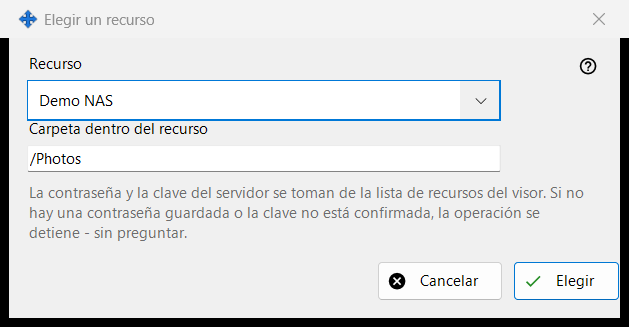
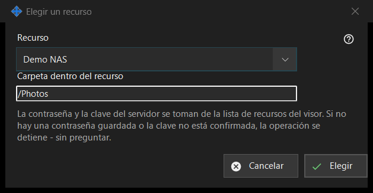

Elegir un recurso
Para qué sirve
Elige un recurso de la lista de recursos del visor como origen o destino de una operación programada. Se abre desde «Recurso..» junto a Origen o Destino en la ventana de la operación programada.


En este orden
- Elige el recurso en la lista «Recurso».
- Comprueba o cambia «Carpeta dentro del recurso»; empieza en la carpeta raíz del recurso.
- Pulsa «Elegir». «Cancelar» conserva el lugar anterior.
Los elementos
Lista de recursos
Solo se ofrecen los servidores SFTP y las carpetas de red de la lista del visor, ordenados por nombre; los recursos de otros tipos no aparecen. Si no hay ninguno, la ventana dice: «En la lista de recursos no hay recursos adecuados. Añada un servidor SFTP o una carpeta de red en el visor.» y «Elegir» sigue desactivado. Añadir un recurso o volver a confiar en él se hace en el visor; esta ventana no establece ninguna conexión.
Carpeta dentro del recurso
La carpeta debe estar dentro de la raíz del recurso elegido; de lo contrario, «Guardar» en la ventana de la operación la rechaza. Al elegir otro recurso, el cuadro se rellena de nuevo con la raíz de ese recurso.
Se ejecuta sin preguntas
La contraseña y la clave del servidor proceden de la lista de recursos del visor. Una ejecución no pregunta nada: si la contraseña no está guardada o la clave del servidor no está confirmada, la operación se detiene y el historial explica el motivo. Un recurso de solo lectura no puede ser el destino de un movimiento o una eliminación, se rechaza un recurso cuya raíz está protegida con un PIN, y un archivo comprimido admite solo carpetas normales.
Ajustes del gestor · Ajustes de uso compartido SFTP · Ajustes del servidor de intercambio